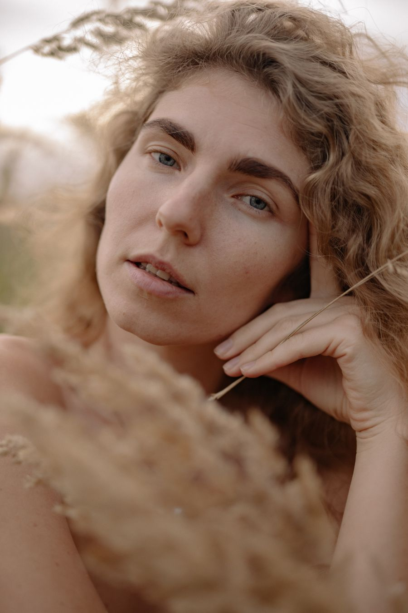
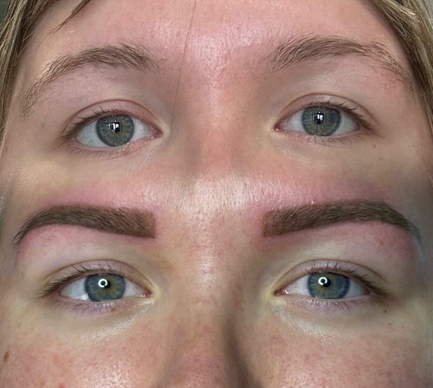
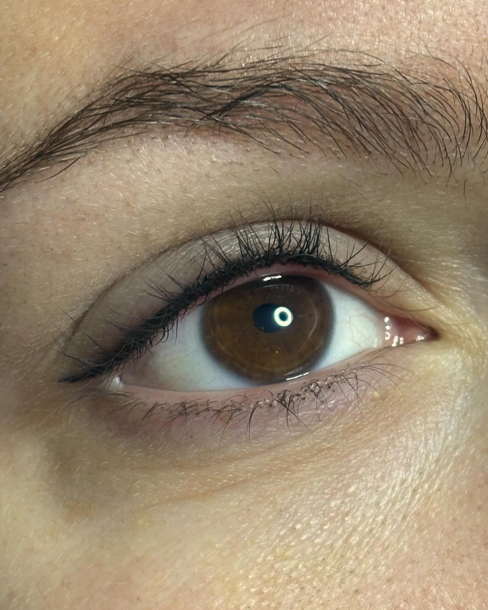
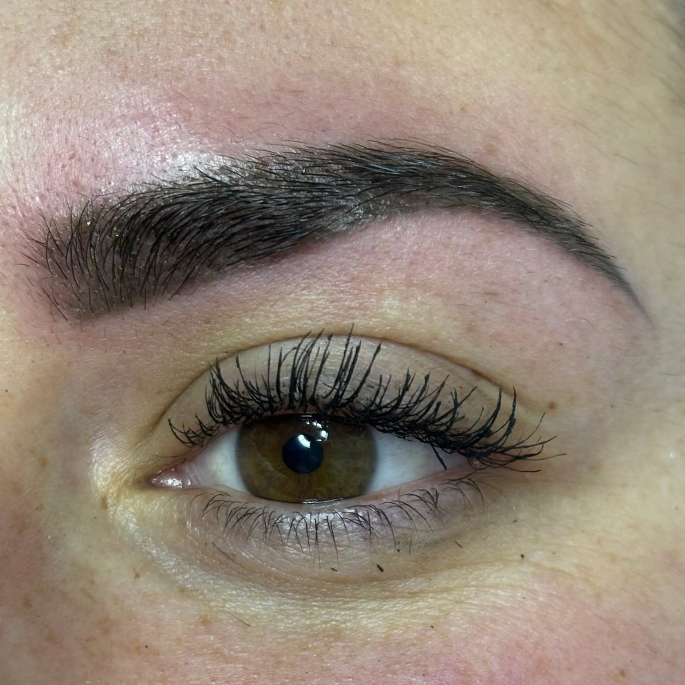
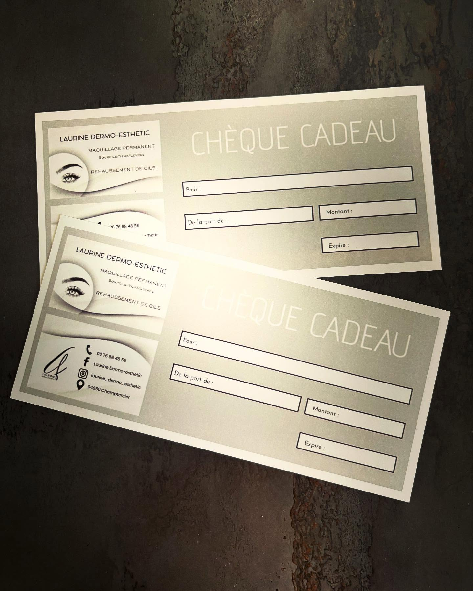

Retouche : à quel moment revenir ?
Faites glisser pour voir la réduction appliquée à votre retouche.
Offerte
Retouche à 1 mois : c'est cadeau.
Maquillage permanent · Champtercier, aux portes de Digne-les-Bains
Sourcils poudrés, eye-liner, lèvres aquarelle et rehaussement de cils. Un geste précis, un résultat naturel, du réveil au coucher.
5,0 · 16 avis Google01 — L'esprit
Laurine
Experte en maquillage permanent, formée aux techniques exclusives et innovantes de Sviatoslav.




02 — Le geste
Vos envies, vos habitudes, ce qui vous complexe, ce que vous aimez dans votre visage. Rien ne commence avant que vous soyez à l'aise et que tout soit clair.
Le tracé se fait d'abord au crayon, sous vos yeux, et se corrige jusqu'à ce qu'il vous ressemble. Laurine vous montre chaque étape et vous explique les pigments choisis.
Un travail au poil près pour des sourcils poudrés, un trait de liner net, une bouche aquarelle. Calme, propre, rassurant : le cabinet est pensé pour que vous respiriez.
Un résultat qui s'affine en quelques semaines. La retouche à 1 mois est offerte, puis dégressive : on garde un regard parfait sans y laisser votre budget.
Chaque détail compte.
03 — Prestations & tarifs
04 — En chiffres
05 — Réalisations
Chaque photo vient du cabinet de Laurine. Cliquez pour agrandir. Plus de réalisations sur Instagram.
06 — Elles en parlent
Plus que ravie de ma prestation pour le liner avec Laurine. J'ai eu que des compliments sur mon liner… Effet naturel comme je voulais, très bonne cicatrisation, douleur minimum. Elle est à l'écoute, douce, minutieuse, si je pouvais mettre 10 étoiles je le ferais !
Nana T.Eye-liner · janvier 2025
Venue pour raviver un microshading daté de 2021, sans aucun regret ! Laurine prend le temps d'expliquer les pigments utilisés, de faire le dessin et de nous montrer l'avancée étape par étape, de quoi rassurer les stressées comme moi. Le lieu est calme et propre.
InannaMicroshading · mars 2025
Laurine a bien compris mes attentes et a parfaitement répondu tant sur les lèvres que pour l'eye-liner. Elle a fait preuve de patience et beaucoup de professionnalisme. Je recommande.
Annie F.Lèvres & eye-liner · mars 2025
J'ai récemment fait un rehaussement de cils chez Laurine, et je suis absolument ravie du résultat ! Laurine est très professionnelle, douce et accueillante. Je la recommande vivement.
Adeline Z.Rehaussement de cils · mars 2025
Maquillage permanent des sourcils, résultat très satisfaisant, praticienne très sérieuse, gentille et soucieuse de ses clients. Malgré la douleur, elle a su s'adapter et rendre la séance agréable.
Ange L.Sourcils · décembre 2024
Je suis très contente du résultat de mon tatouage des sourcils, Laurine est très perfectionniste et professionnelle, je la recommande sans hésitation.
Christine D.Sourcils · mars 2025
J'ai récemment fait un rehaussement de cils chez Laurine et je suis ravie du résultat ! Le travail est soigné, Laurine est très attentionnée et professionnelle. Je recommande !!
Mégane B.Rehaussement de cils · septembre 2024
Tatouage des sourcils, j'adore le résultat ! Laurine est au top, très gentille et professionnelle, j'y retournerai pour d'autres prestations.
Dolores L.Sourcils · janvier 2025
07 — Avant, pendant, après
Laurine répond à tout, sans jargon, avant même la première séance. Voici déjà l'essentiel.
On prend d'abord le temps d'échanger, puis Laurine dessine la forme au crayon et la valide avec vous avant tout geste. Elle vous explique les pigments utilisés et vous montre l'avancée étape par étape. Comptez une séance sans stress, dans un cabinet calme et propre.
La sensibilité varie d'une personne à l'autre. Ses clientes parlent d'une douleur minimale pour certaines et d'une sensation supportable pour d'autres, toujours avec une praticienne qui s'adapte. Dites-lui simplement comment vous vous sentez à chaque étape.
Les pigments s'estompent progressivement, c'est normal. D'où la retouche : offerte à 1 mois, puis −70 % à 6 mois, −50 % à 1 an et −30 % au-delà.
C'est une étape clé : la peau passe par plusieurs phases avant le résultat final. Laurine détaille le processus des sourcils étape par étape dans ses publications, et vous donne ses conseils personnalisés après la séance. Voir son Instagram.
Prévenez Laurine avant de réserver en cas de grossesse, d'allergie connue, de traitement en cours ou de peau irritée. Elle vous dira si la séance peut avoir lieu ou s'il vaut mieux attendre. Vous pouvez aussi le noter dans le formulaire de réservation.
Directement ci-dessous : choisissez vos prestations et vos créneaux, votre demande part par SMS à Laurine, qui vous confirme le rendez-vous. Vous pouvez aussi l'appeler au 06 76 88 48 56 ou lui écrire en message privé sur Instagram. Les moyens de paiement se précisent à la confirmation.
08 — Avantages
Faites glisser pour voir la réduction appliquée à votre retouche.

Carte cadeau
Un chèque cadeau, au montant de votre choix, valable sur toutes les prestations : maquillage permanent ou rehaussement de cils. Le cadeau parfait pour celles qui méritent de se chouchouter.
Commander un chèque cadeauParrainage
Sur le rehaussement de cils, 10 € pour vous et un avantage pour elle. Demandez les détails à Laurine lors de votre prise de rendez-vous.
09 — Réserver
Choisissez vos prestations et jusqu'à trois créneaux souhaités. Votre demande est prête à partir par SMS vers Laurine, qui vous confirme le rendez-vous. Rien n'est réservé tant qu'elle n'a pas répondu.
Vous pouvez en choisir plusieurs.
Total estimé : 0 €
Ouvert du lundi au vendredi. Sélectionnez un jour puis une ou plusieurs heures (3 maximum).
Jours fériés et veilles de congés : à confirmer avec Laurine.
Choisissez un jour
Mes souhaits
Ces informations restent sur votre téléphone : elles servent uniquement à rédiger votre SMS.
Envoyez-la par SMS à Laurine : le message est déjà rédigé. Elle vous répond pour confirmer le rendez-vous.
Vous préférez en parler ? 06 76 88 48 56 · du lundi au vendredi, 9 h – 18 h (19 h le jeudi).
10 — Nous trouver
Horaires
| Lundi | 9 h – 18 h |
|---|---|
| Mardi | 9 h – 18 h |
| Mercredi | 9 h – 18 h |
| Jeudi | 9 h – 19 h |
| Vendredi | 9 h – 18 h |
| Samedi | Fermé |
| Dimanche | Fermé |